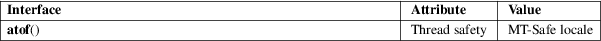

atof − convert a string to a double
Standard C library (libc, −lc)
#include <stdlib.h>
double atof(const char *nptr);
The atof() function converts the initial portion of the string pointed to by nptr to double. The behavior is the same as
strtod(nptr, NULL);
except that atof() does not detect errors.
The converted value.
For an explanation of the terms used in this section, see attributes(7).

C11, POSIX.1-2008.
POSIX.1-2001, C89, C99, SVr4, 4.3BSD.
atoi(3), atol(3), strfromd(3), strtod(3), strtol(3), strtoul(3)